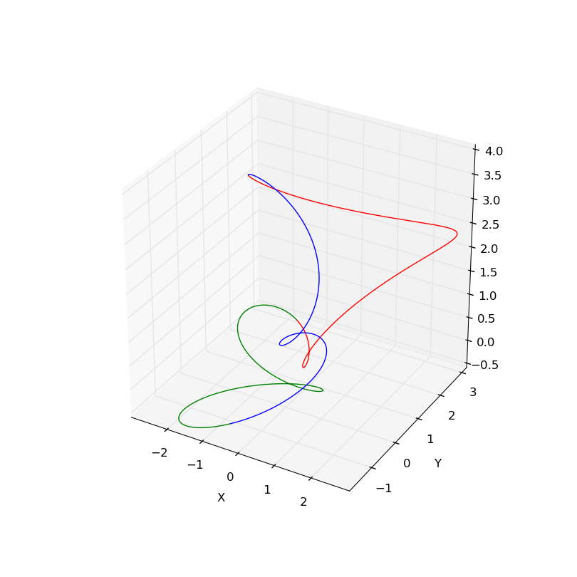

- Examples of using a single scalar quantity for color.
The input data has particle positions ranging from 0 to 1 stored in
binary table format. The box size of this cosmological simulation is
100 Mpc/h with 2048^3 grids. The examples show the visualization of
about 174 million particles by using 96 MPI processes.
1) Default (parameters and
log).
2) Changing brightness0=1.0 to brightness0=10.0 (parameters).
3) Changing color_asinh0=t to color_log0=t (parameters).
4) Changing intensity_max0=5.0e+11 to intensity_max0=5.0e+9 (parameters).
5) Changing no intensity_min0 to intensity_min0=5.0e+7 (parameters).
7) Changing smooth_factor=0.001 to smooth_factor=0.01 (parameters).
- Examples of using three scalar quantities for color.
2) Using binary format with an AMR-grid simulation output
(parameters).
The following videos show the usage of several different color palettes.
In addition to the default color palettes included in the Splotch release,
you can have additional color palettes which are derived from
the Python Matplotlib. Download
this file which is a zip file of
the additional "pal" files.
The box size of this cosmological simulation is
200 Mpc/h. The examples show the visualization of
about 1 billion particles by using 48 MPI processes.
1) Using binary format with a uniform-grid simulation output
(parameters).
(large image: 1024x1024)
(Video: 462x462)
(large image: 2048x2048)
(Turn on HD!) (Video: 1920x1200)
The video above was made by using the following camera path:

where the center of the simulation box and the video sits at the origin (0, 0, 0).
1) jet
(Turn on HD!) (Video: 1280x720)
2) RdYlBu_r
(Turn on HD!) (Video: 1280x720)
3) Stars
(Turn on HD!) (Video: 1280x720)
{kind=link}
{kind=link}